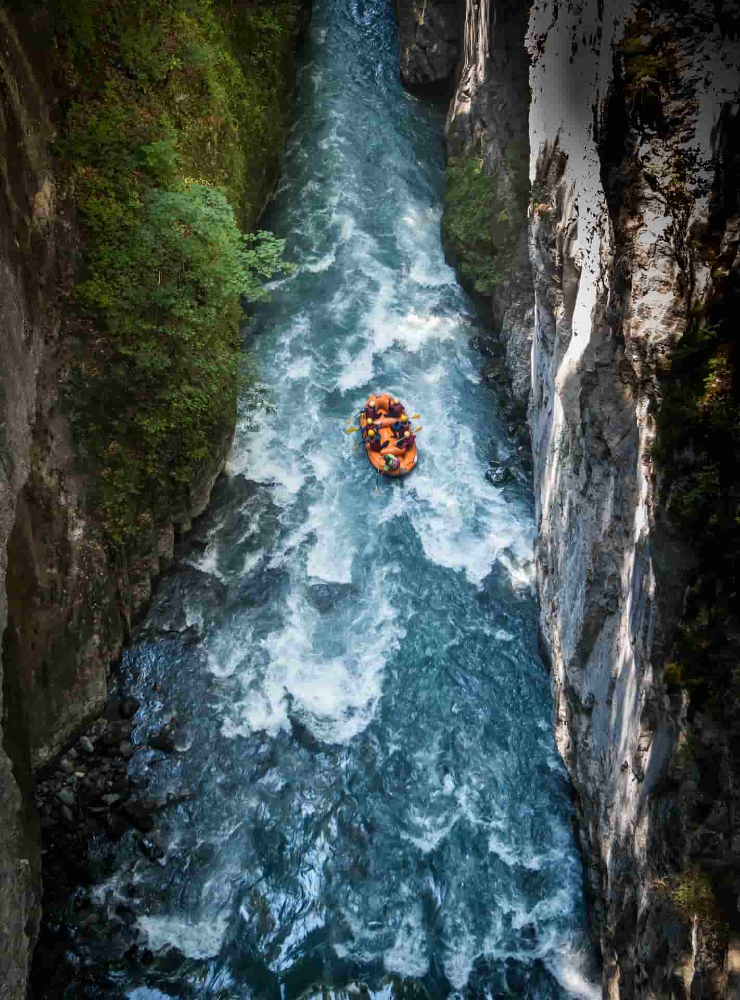
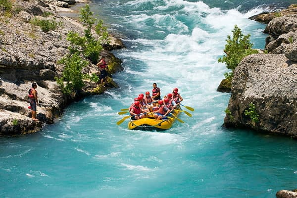
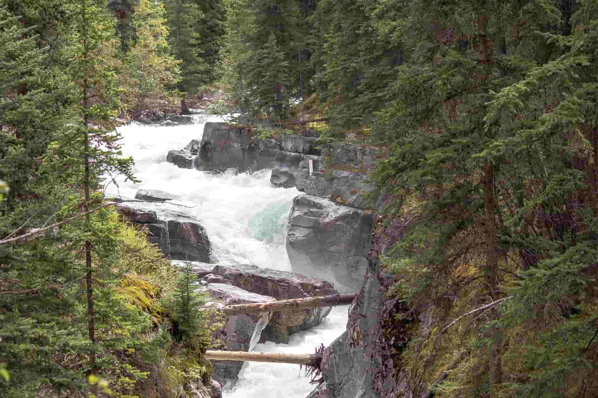
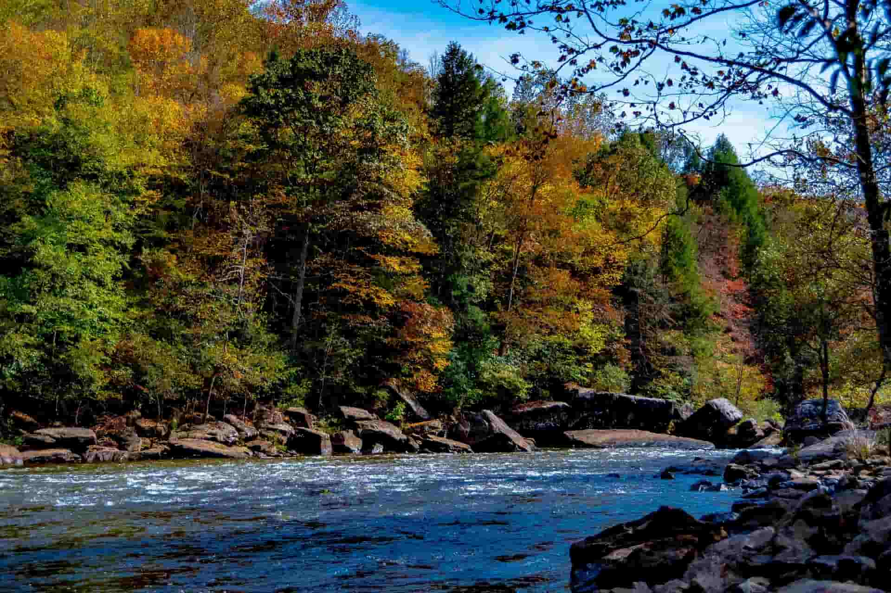
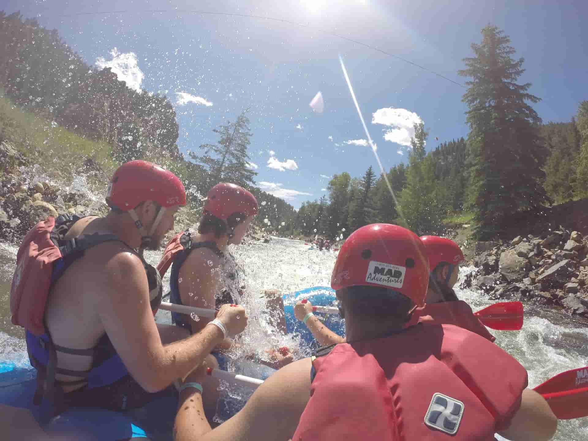
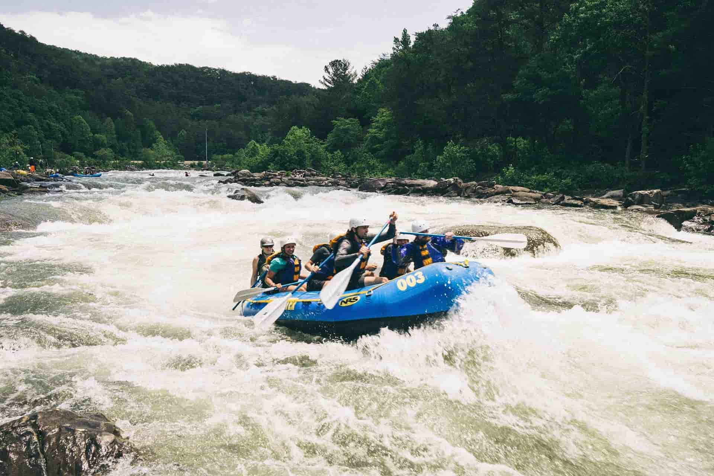

Nossa missão
Nosso objetivo é levar adrenalina e muita diverção para todos os gostos.



Nosso objetivo é levar adrenalina e muita diverção para todos os gostos.
Minha historia no Rafting comecou quando fui para a Europa e fiz por lá e me apaixonei logo de cara, então não contente de fazer só resolvi criar a empresa no intuito de mais pessoas tbm conhecerem e se apaixonae por isso que gosto tanto.




